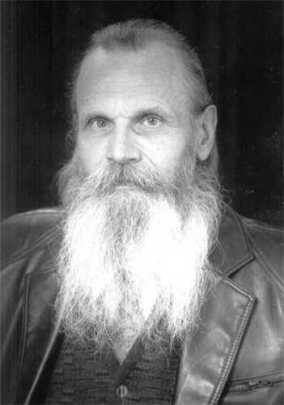

Родился в 1942 году в с. Елатьма, Рязанской обл. Родители были репрессированы, с 1943 по 1956 г. воспитывался в дет. домах. Окончив ремесленное училище в Челябинске, работал на стройках, заводах, в геологических партиях, плавал матросом по Енисею, затем обосновался на Дальнем Востоке, в Амурской обл. Начал публиковать свои произведения с 1958 г. В 1974 г. был принят в Союз писателей СССР. В разное время стихи Л. Андреева получили высокую оценку таких мастеров, как: М.А. Светлов, Н. Рыленков, В.С. Рождественский, Б. Слуцкий, Д. Самойлов и др. Основными публикациями являются поэтические сборники:
С 1987 г. проживает в г. Орехово-Зуево, где в 1994-1996 годах была издана поэтическая трилогия "Берег неба". По инициативе Д.О.Р.Т.Р.О. (Добровольное Общество Ревнителей Традиционной Русской Орфографии) в 2008 г. началось издание полного собрания стихотворных произведений:
В дальнейшем планируется издание еще 2-3-х томов.
Все книги, вышедшие в период с 1994 по 2012 год можно заказать у автора. Стоимость каждого тома собр. соч. не превышает типографские расходы и почтовые услуги. По вопросам приобретения книг обращайтесь через форму обратной связи ниже. Отзывы о стихах так же принимаются через форму обратной связи.
"У него как бы неожиданно появляется великолепное стихотворение, которому мог бы позавидовать и зрелый мастер"
М.А. Светлов, 1971 г."...стихи Л. Андреева отмечены несомненной поэтическою культурою, и прежде всего – культурою мысли, чувства, слова."
Илья Фоняков."Форма стихов представилась мне настолько традиционною, даже в чем-то "Пушкинскою", что ли, что я тот час поймал себя на мысли: Да ведь смелость нужна, чтобы столь просто писать в наше время..."
А. Филипович."Поэту повсюду была чужда голая декларативность... Встретить в его строчках восклицательный знак – редкость. В большинстве стихов он чурался будто бы и актуальнейшей современности, писал будто бы постоянно просто о тишине, деревьях, звуках, свете. О вещах вечных, неприходящих, и заведомо прекрасных. И все же во всех своих наблюдениях он оказывался современен, как современна нам ядерная физика..."
А. Филипович."В смысловом пространстве Книги ("Русская Аватара") зашифровано наследие великих эзотерических традиций древности, и это делает ее совершенно уникальной попыткой художественного синтеза всех граней духовного опыта, накопленного человечеством".
Клим Булавкин.""Звездный Часослов" представляет собой не просто сборник стихов и даже не книгу стихов, а скорее несколько тесно связанных друг с другом книг, образующих целостное идейно-смысловое пространство – грандиозный поэтический космос Л. Андреева-Селижарова".
Клим Булавкин."Все написанное Л.Г. Андреевым-Селижаровым, находится в подчеркнутом противостоянии сегодняшнею Российскою общественно-языковою практикой. Всем строем своих стихов поэт отстаивает чистоту русского языка, неприкосновенность его орфографических и граматико-стилистических норм.".
С.Д. Герцев.